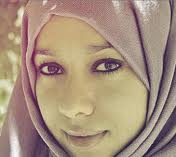

پذيرش > تریبون > گزارش كمپين > افراح ناصر روزنامه نگار و خبرنگارمبارز یمنی : ما لیاقت یک جامعه دمکراتیک را داریم ، نه (...)


 افراح ناصر روزنامه نگار و خبرنگارمبارز یمنی : ما لیاقت یک جامعه دمکراتیک را داریم ، نه رئیس جمهوری که سه دهه حکومت می کند افراح ناصر روزنامه نگار و خبرنگارمبارز یمنی : ما لیاقت یک جامعه دمکراتیک را داریم ، نه رئیس جمهوری که سه دهه حکومت می کند
19 خرداد 1390 - - نسخه قابل چاپ

وقتی انقلاب آغاز شد فهمیدم که می بایست حرف بزنم، حرف خودم را بزنم و تعریف کنم که در خیابانها چه بر سر مردم می آید. همه خبرنگاران بین المللی مجبور به ترک کشور شدند، مقامات دولتی تارنماهای خبری را تعطیل کردند و دوربینهای خبرنگاران را توقیف کردند. من در وبلاگم از عقاید شخصیم می نویسم، در آن عکس و فیلم منتشر می کنم و با مردم حرف می زنم.
{}
تغییر برای برابری - شهرزاد امین -
افراح ناصر زن مبارز یمنی، روزنامه نگارو وبلاگ نویس که برای شرکت در برنامه آموزشی رسانه های اجتماعی انسیتوی سوئدی به استکهلم آمده است، در مصاحبه های متعددی با مطبوعات سوئدی شرکت کرده و روند گسترش مبارزات مردم یمن را بازتاب داده است. افراح تنها روزنامه نگار زن روزنامه یمن ابزرور است و در کنار شغل خبرنگاری به وبلاگ نویسی نیز مشغول بوده و نابرابری های موجود در جامعه را انعکاس می دهد. وبلا گ وی از طرف تلویزیون آمریکائی سی ان ان به عنوان یکی از ده وبلاگ مهم و پر خواننده خاورمیانه برگزیده شد.
افراح در مصاحبه ای با تارنمای مدیا ورلدن می گوید وقتی انقلاب آغاز شد فهمیدم که می بایست حرف بزنم، حرف خودم را بزنم و تعریف کنم که در خیابانها چه بر سر مردم می آید. همه خبرنگاران بین المللی مجبور به ترک کشور شدند، مقامات دولتی تارنماهای خبری را تعطیل کردند و دوربینهای خبرنگاران را توقیف کردند. من در وبلاگم از عقاید شخصیم می نویسم، در آن عکس و فیلم منتشر می کنم و با مردم حرف می زنم.
خبرنگار بودن و بویژه حبرنگار زن بودن در یمن کار دشواری ست. افراح می گوید که این کار برای وی یک چالش بوده است چرا که بسیاری معتقدند که وی بعنوان یک زن میبایست ساکت بنشیند.
 وبلاگ نویسی برای من یک شغل نیست، این بخشی از زندگی من است. من باید بنویسم. وبلاگ نویسی برای من یک شغل نیست، این بخشی از زندگی من است. من باید بنویسم.
افراح و خانواده اش بارها به دلیل فعالیتهای وی مورد تهدید قرار گرفته اند. او از فعالینی که مورد ضرب و جرح قرار گرفته ، مفقود شده اند و از زن جوانی که از شهر ربوده شده و زنده زنده در اتش سوزانده شد، می گوید. (این نمونه مرا، نویسنده مقاله، به یاد ترانه موسوی در ایران می اندازد).
اما افراح خوشبین به نظر می رسد و می گوید من اساسن خیلی امیدوارم و معتقد هستم که دمکراسی وحرمتهای انسانی به یمن نیزخواهد رسید. از همین حالا من و دوستانم به فکر بازسازی کشورمان پس از سقوط صالح هستیم. مبارزات کنونی ما بهائی است که ما می بایست برای آزادی بپردازیم.
افراح در مصاحبه دیگری با روزنامه سوید سونسکا داگ بلادت نسبت به تحولات جاری پس از زخمی و فراری شدن رئیس جمهور این کشور ابراز نگرانی می کند. او می گوید اگر صالح کشته شودخانواده او دست به انتقام جوئی خواهند زد و اگر این اتفاق رخ دهد کشور دچار هرج و مرج خواهد شد. افراح معتقد است که صالح در دوران صلح از حمایت زیادی ، علیرغم عدم وجود دمکراسی و رفاه اجتماعی، برخوردار بوده است. – وی زمانی که شروع به حمله مو شکی به خانه های مخالفین خود کرد حمایت خود را از دست داده و مردم را به سوی انقلابیون سوق داد. او به دست خویش، خودش را در این مخمصه انداخت. او در پاسخ به سوال خبرنگار که از وی می پرسد " تظاهر کنندگان چه می خواهند؟" می گوید – ما لیاقت یک جا معه دمکراتیک که رئیس جمهورش پس از 4، 5 سال کناره گیری کند را داریم ، نه رئیس جمهوری که سه دهه حکومت می کند. ما یک دولت مدنی، حقوق برابرو حقوق متساوی بین شهروندان را می خواهیم. یک دمکراسی معمولی.
از نظر افراح قبایل یمنی فاکتور مهمی درتحولات جاری هستند. او می گوید که صالح موفق شده بود آنها را به نفع خود بسیج کند اما حا لا همه آنها به مبارزه با وی برخواسته اند.
– من خودم شاهد بودم که چگونه رهبر قبیله یاریم که من عضو آن هستم، در میدان تغییر روی سن رفته و حمایت خود را از جنبش مسالمت آمیز ابراز کرد. افراح با هرگونه دخالت خارجی از نوع دخالت ناتو در لیبی مخالف است. او می گوید که جامعه جهانی می تواند از طریق سازمان ملل متحد صالح را تحریم کرده، اموال او را در بانکهای خارجی توقیف کنند و او را وادار به استعفا نمایند.
ارسال به
بالاترین
،
توییتر
،
فریندفید
،
فیسبوک
در همين بخش :
 دهمین دورۀ مراسم تندیس صدیقه دولت آبادی ۱۳۹۲ دهمین دورۀ مراسم تندیس صدیقه دولت آبادی ۱۳۹۲
کارت پستالهایی به بهانهی هشت مارس و به یاد همهی مبارزین راه برابری
بیانیه بیش از 350 تن از مدافعان حقوق زنان به مناسبت روز جهانی زن؛ زنان هر روز فرودستتر میشوند
لباسی که برای تن ما دوخته اند! /اعظم بهرامی
چالشها و چشمانداز فعالیت مدنی زنان
ديگر بخش ها :
طرح یک میلیون امضا
|
مقالات
|
سایت نوشته ها
|
اخبار
|
گزارش كمپين
|
گفت و گو
|
علیه سکوت
|
كوچه به كوچه
|
نامه های شما
|
گزارش ویژه
|
گفتگو با اعضا
|
ویژه سالگرد کمپین
|
تصویر برابری
|
دل آرام علی
|
تریبون
|
مقالات
|
تاریخ شفاهی
|
خارج از چارچوب
|
کتابخانه
|
درباره کمپین
|
کمپین در شهرها
|
کمپین در بند
|
صدای تغییر
|
ویژه 22 خرداد
|
لایحه حمایت از خانواده
|
گالری
|
عشا مومنی
|
امیر یعقوبعلی
|
خدیجه مقدم
|
راحله عسگری زاده و نسیم خسروی
|
پروین اردلان،جلوه جواهری، مریم حسین خواه، ناهید کشاورز
|
زینب پیغمبرزاده
|
سعیده امین، سارا ایمانیان، محبوبه حسین زاده، ناهید کشاورز و همایون نامی
|
احترام شادفر
|
نسیم سرابندی زاده،فاطمه دهدشتی
|
وبلاگ مهمان
|
پرونده خرم آباد
|
دستگیری ها
|
مریم مالک
|
پرستو اللهیاری
|
مهرنوش اعتمادی
|
سمیه رشیدی
|
Other Languages
|
همراهان
|
«فراخوان کمپین ده روز با بهاره هدایت»
| English
|